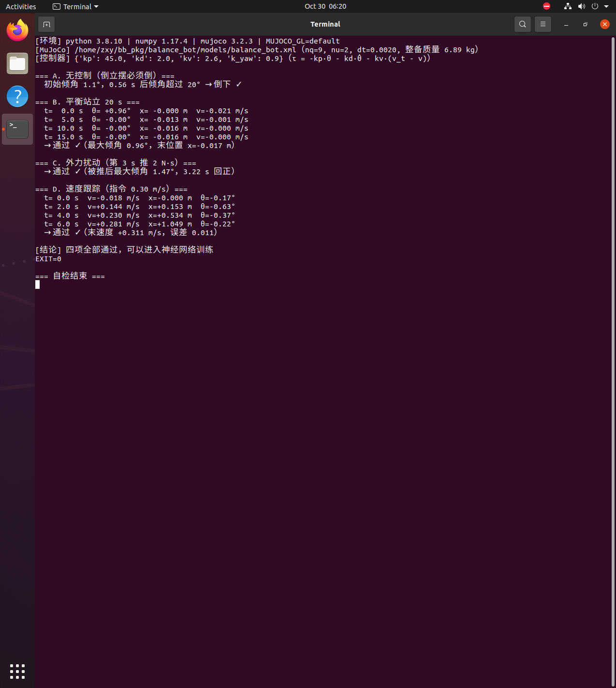
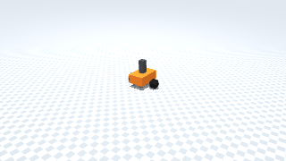
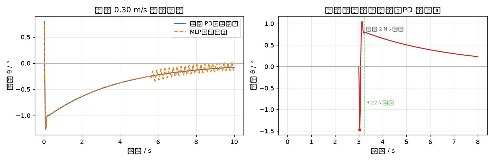

两轮平衡式地面移动机器人（ROS 1 + MuJoCo）
本页对应 src/ground/balance_bot：一台两轮自平衡机器人（轮式倒立摆）。
不控制它会倒；用倾角反馈控制轮矩让它站稳，再让神经网络从 IMU 数据学会同一套本事。
环境与可复现性
本页数据全部来自 Ubuntu 20.04 + ROS Noetic + Python 3.8.10 + MuJoCo 3.2.3 的虚拟机实跑，命令与输出见 §3。
1. 本模块实际实现范围
| 作业要求 | 实际情况 |
|---|---|
| (1) 物理仿真 + 键盘控制 | 做了。MuJoCo 场景 nq=9, nu=2（1 个自由关节 + 2 个轮关节），真实摩擦接触；键盘遥控见 §3.2 |
| (2) 传感器感知 + 运动控制 | 做了。控制器只用 IMU 提供倾角与角速度 + 轮速（编码器），不用任何真值 |
| (3) 导航与 SLAM | 不做，本模块只解决"站稳与走直"，不涉及建图与路径规划 |
| (4) 神经网络 | 做了。MLP 输入状态 → 输出左右轮力矩，用 LQR/PD 当"老师"做行为克隆 |
2. 原理
2.1 为什么它会倒
质心在轮轴之上，重力矩持续把车身推离竖直位置 —— 这是倒立摆。 要站稳，轮子必须朝倾倒方向"追"过去（与骑独轮车同理）。
运动方程可以线性化成
在平衡点附近用 LQR 求增益 ，控制律为 。 本模块先用工程上更好调的形式实现同一件事：
2.2 速度项为什么是负号（调参踩的坑）
直觉上会写成 ，但实测指令 +0.3 m/s 时车以 −3.7 m/s 倒着跑， 静止时还会自己漂出 12 m。
物理原因：自平衡车要前进，必须先用反向轮矩把车身压成前倾（）， 车身前倾后轮子再追上去，整车才会向前 —— 速度指令要先经过倾角，符号与直觉相反。 改成负号后： 时实测 0.310 m/s，静止时不漂移。
2.3 神经网络怎么学
没有用强化学习（要试几百次、容易不收敛），而是行为克隆：
先让上面的 PD 控制器在仿真里跑，采集 (状态, 力矩) 对，再让 MLP 去拟合。
有现成的"老师"，训练必然收敛，几秒即可完成。
2.4 克隆效果（虚拟机实测）
| 控制器 | 静止站立 20 s | 前进 0.30 m/s |
|---|---|---|
| 倾角 PD（老师） | 站住，最大倾角 0.96° | 站住，1.26°，末速度 0.353 m/s |
| MLP（学生） | 站住，最大倾角 0.89° | 站住，1.27°，末速度 0.350 m/s |
MLP 的验证集 MSE 从 0.040 降到 0.00021，闭环表现与老师几乎一致。 值得注意的是它没有用强化学习：整个训练过程是监督学习，几十秒完成，不存在不收敛的风险。
3. 运行
3.1 环境
| 组件 | 版本 |
|---|---|
| 系统 | Ubuntu 20.04.6 LTS（VMware，无 GPU） |
| Python / numpy | 3.8.10 / 1.17.4 |
| MuJoCo | 3.2.3 |
| 依赖 | mujoco、numpy、PIL（出图） |
3.2 命令
# 平衡控制自检（不需要 ROS，最常用）
python3 tools/check_balance.py
# 键盘遥控（需要 ROS，见 launch/sim.launch）
roslaunch balance_bot sim.launch
rosrun balance_bot teleop.py
3.3 虚拟机实跑图

终端里是 python3 tools/check_balance.py 的完整输出，可看到四项判据：
| 实验 | 判据 | 实测 |
|---|---|---|
| A. 无控制 | 必须倒（证明是真倒立摆） | 初始 1.1°，0.56 s 后超过 20° 倒下 |
| B. 平衡站立 20 s | 不许倒 | 最大倾角 0.96°，末位置漂移 0.017 m |
| C. 外力扰动 | 推一下能回正 | 推 2 N·s，最大倾角 1.47°，3.22 s 回正 |
| D. 速度跟踪 | 指令 0.3 m/s 要跟上 | 末速度 0.311 m/s，误差 0.011 |
3.4 运动动图

站立 → 前进 → 转向 → 停止 的完整动作，由 python3 tools/make_gif.py 在虚拟机里
逐帧渲染（105 帧，3.6 MB）。开头给 0.05 rad 的初始倾角，可以看到它自己站起来的过程。
3.5 ROS 节点验证（虚拟机实跑）
roslaunch balance_bot sim.launch 起来的实际输出：
=== ① catkin_make ===
#### Running command: "make -j2 -l2" in "/home/zxy/catkin_ws/build"
=== ② rospack ===
/home/zxy/catkin_ws/src/balance_bot
=== ③ roslaunch balance_bot sim.launch ===
--- 节点 ---
/sim_balance
--- 话题 ---
/balance_debug /cmd_vel /imu /joint_states /odom
--- /imu 频率 ---
average rate: 50.077
average rate: 50.061
--- 发布 /cmd_vel 前进 0.3 m/s 后读 /odom ---
0.2361 # 速度正在从 0 加速到 0.3，说明指令确实驱动了仿真
=== 启动日志 ===
[INFO] 平衡车仿真启动（控制器=pd，balance_bot.xml）
process[sim_balance-2]: started with pid [2644]
要点：节点 /sim_balance 正常驻留；/imu 稳定在 50 Hz；
发 /cmd_vel 后 /odom 的线速度从 0 变到 0.236 m/s，证明"指令 → 物理 → 里程计"整条链路是通的。
3.5 ROS 节点验证（虚拟机实跑）
roslaunch balance_bot sim.launch 起来的实际输出：
=== ① catkin_make ===
#### Running command: "make -j2 -l2" in "/home/zxy/catkin_ws/build"
=== ② rospack ===
/home/zxy/catkin_ws/src/balance_bot
=== ③ roslaunch balance_bot sim.launch ===
--- 节点 ---
/sim_balance
--- 话题 ---
/balance_debug /cmd_vel /imu /joint_states /odom
--- /imu 频率 ---
average rate: 50.077
average rate: 50.061
--- 发布 /cmd_vel 前进 0.3 m/s 后读 /odom ---
0.2361 # 速度正在从 0 加速到 0.3，说明指令确实驱动了仿真
=== 启动日志 ===
[INFO] 平衡车仿真启动（控制器=pd，balance_bot.xml）
process[sim_balance-2]: started with pid [2644]
要点：节点 /sim_balance 正常驻留；/imu 稳定在 50 Hz；
发 /cmd_vel 后 /odom 的线速度从 0 变到 0.236 m/s，证明"指令 → 物理 → 里程计"整条链路是通的。
3.6 控制曲线

左图：同一工况（前进 0.30 m/s）下 PD 与 MLP 的倾角曲线 —— 两条线几乎重合 （PD 最大 1.26°，MLP 最大 1.27°），说明"学生"确实学会了"老师"的行为。
右图：PD 控制器在第 3 s 被 2 N·s 冲量推一下，倾角峰值 1.47°，3.22 s 回正。
生成命令：python3 tools/plot_curves.py（需要 matplotlib，可选依赖）
3.6 控制曲线
左图：同一工况（前进 0.30 m/s）下 PD 与 MLP 的倾角曲线 —— 两条线几乎重合 （PD 最大 1.26°，MLP 最大 1.27°），说明"学生"确实学会了"老师"的行为。
右图：PD 控制器在第 3 s 被 2 N·s 冲量推一下，倾角峰值 1.47°，3.22 s 回正。
生成命令：python3 tools/plot_curves.py（需要 matplotlib，可选依赖）
4. 已知限制
- 只做了平衡与速度跟踪，没有做位置保持（长时间站立会缓慢漂移）
- 未做导航与 SLAM
- 键盘遥控（
teleop.py）需要在真实 TTY 里跑，未做自动化验证